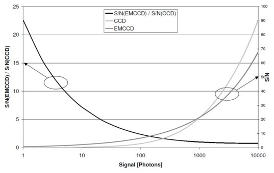
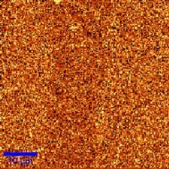
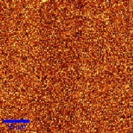
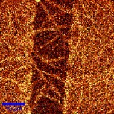
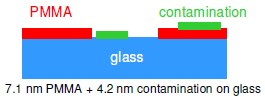

|
EMCCD 相机
|
本节对光谱电子倍增 CCD（EMCCD）相机进行简要介绍并提供一些背景信息。使用电子倍增 CCD（EMCCD）相机的主要优势在于快速测量中信噪比的提高。因此，下文首先分析 CCD 相机内部的噪声源，然后介绍 EMCCD 技术及其在信噪比（S/N）方面的优势。随后，将展示对载玻片上受污染的 PMMA 样品的检测作为示例，说明系统配合 EMCCD 相机的性能。
系统要求：
背景：CCD 相机内部的噪声源
共聚焦拉曼装置中通常使用的背照式 CCD 相机的量子效率超过 90 %。因此，到达探测器的绝大多数光子都被转换为电子。这意味着，在优化信噪比时，信号几乎无法进一步提高，因此需要降低噪声以实现改善。
CCD 相机检测到的光子遵循泊松统计。对于任何给定的信号，与之关联的噪声将是信号本身的平方根。这种噪声称为光子散粒噪声。对于 100 个电子的信号，检测不确定度为 10 个电子，因此最大信噪比为 10。其他噪声源主要是热噪声（暗噪声）和读出噪声。由于散粒噪声设定了信噪比的上限，目标必须是将所有其他噪声源最小化。
CCD 芯片内部的热生载流子是产生暗噪声的原因。这些可以通过高效冷却来减少，高质量的 CCD 相机在 -60 °C 时热暗电流将低于 0.01 电子/像素/秒。这种冷却对于数秒钟的积分时间是足够的，而在典型的积分时间低于 100 ms 的共聚焦拉曼成像中则变得无关紧要。
由光子产生的电子通过读出放大器转换为数字计数。这一转换过程是读出噪声的来源。它直接与读出放大器的质量和所使用的读出速度相关。典型值是在 50 kHz 读出速率下噪声为 5-10 个电子，在 2.5 MHz 下约为 30 个电子。
任何光谱实验的目标都是获得受散粒噪声限制的信号。当散粒噪声是主要的噪声源时，就达到了这种情况。如果记录单个光谱，这可以简单地通过增加积分时间来实现。然而，如前所述，在共聚焦拉曼成像中，短的积分时间以及因此快速读出检测数据是必不可少的。不幸的是，探测器的读出速度越快，放大器的读出噪声就越高。一个配备 50 kHz 读出放大器的 1024x128 像素 CCD 可以在约 22 ms 内读出，这也是最短可能的积分时间。如果假设读出噪声为 10 个电子，则每个低于 100 电子/像素的信号都将受读出限制（泊松噪声 ≥ 读出噪声）。如果使用一个显示读出噪声为 30 个电子的快速读出放大器，即使 900 个电子的信号（探测器上 1000 光子/像素）也将受读出限制。
使用 EMCCD 相机的信噪比改进
EMCCD 是一种正常的 CCD，但增加了一个额外的读出寄存器，该寄存器以比普通 CCD 读出寄存器高得多的时钟电压驱动。由于这种高时钟电压，通过碰撞电离实现了电子倍增，信号的总放大倍数可调节至高达 1000 倍。由于这种放大发生在读出放大器之前，因此总是可以将信号放大到超过读出噪声的水平。信噪比则始终受信号的泊松噪声限制，即使使用非常快的读出放大器也是如此。例如，一个配备 2.5 MHz 读出放大器的 1600×200 像素 EMCCD 可以在约 2 ms 内读出。
以下计算展示了对于不同信号可以预期的信噪比改进。假设 CCD 的量子效率（QE）为 90 %，并使用 2.5 MHz 读出放大器。该放大器具有 30 个电子的关联读出噪声。制造商通常设置 A/D 转换，使此噪声对应 1 个 A/D 计数（30 个电子 = 1 个 A/D 计数）。
如果 100 个光子到达标准 CCD 模式下的探测器，90 个将被记录，相当于 3 个 A/D 计数。泊松噪声将为 9.5 个电子或 0.3 个 A/D 计数，读出噪声为 1 个 A/D 计数。因此信噪比约为 2.9。
对于 EMCCD，信号在到达 A/D 转换器之前被放大。虽然这种放大是可变的，但为便于说明，本例中使用 1000 的最大放大倍数。在这种情况下，检测到的 90 个电子将被放大到 90,000 个电子，产生 3000 个 A/D 计数。泊松噪声将被放大到 9500 个电子，相当于 317 个 A/D 计数。电子倍增过程增加了另一个 1.4 的噪声因子（所谓的过量噪声因子）。因此，包括该因子和 A/D 转换产生的 1 个 A/D 计数在内的总噪声为 443 个 A/D 计数。因此，EMCCD 在此模式下的信噪比为 6.8，与"正常"CCD 相机相比提高了 2.4 倍。
这种改进强烈依赖于到达 CCD 相机的光子数量，对于小信号比对于大信号更为显著。对于较高的信号，当信号强度不再受读出限制时，EM 过程的过量噪声因子会将 EMCCD 的信噪比降低到低于正常 CCD 的水平。在这种情况下，可以关闭 EM 寄存器，然后使用"正常"读出寄存器。因此，EMCCD 就像标准的背照式 CCD 一样工作。
图 1 显示了"正常"CCD 相机以及 EMCCD 相机的信噪比对到达探测器的信号的依赖关系。此外，还显示了这两个信噪比的比率。

图 1："正常"CCD 相机和 EMCCD 相机的理论信噪比作为到达探测器的信号的函数。两个信噪比的比率也一并显示。
可以看出，EMCCD 相机的优势明显在于只能检测到微弱信号的区域。在约 1100 个光子到达探测器以上，"正常"CCD 相机模式更可取。由于增益为 1000 的 EMCCD 相机在约 1900 个光子处就会饱和，因此在约 1000 个光子以下的操作没有问题。对于超快速共聚焦拉曼成像测量中存在的小信号，EMCCD 相机的信噪比可以比"正常"CCD 相机高出多达 20 倍。
实验装置与结果
以下测试所用的样品是旋涂在玻璃基板上的超薄聚（甲基丙烯酸甲酯）（PMMA）薄膜。该层被划伤，PMMA 在样品的部分区域被去除（在下图的中心）。通过 AFM 测定此处样品的高度为 7.1 nm。此外，在表面上发现了一个针状污染物，厚度为 4.2 nm。该污染层的来源和材料组成最初未知，但可以通过共聚焦测量来确定。
图 2 中呈现的结果是使用配备 UHTS 300 光谱仪和 EMCCD 探测器 WITec 系统获得的。图像通过在 50×50 µm 扫描范围内采集 200×200 条拉曼光谱并对 PMMA 在约 3000 cm-1 处的 CH2 伸缩带强度进行积分获得。激发功率为 20 mW，波长 532 nm，使用 100x, NA=0.9 物镜。
|
(a) „正常“ 背照式CCD |
(b) EMCCD |
(c) EMCCD |
|
 |
 |
 |
|
36 ms/光谱 |
3.6 ms/光谱 |
36 ms/光谱 |
(d)

图 2：玻璃上 7.1 nm PMMA 层的共聚焦拉曼图像，在约 2950 cm-1 处的 CH2 伸缩带中获得：(a) 背照式 CCD，(b,c) EMCCD。比例尺：10µm。(d) 样品示意图。
图 2 (a) 是使用标准背照式（BI）CCD，采用 62 kHz 读出放大器和每条光谱 36 ms 积分时间获得的。稍微想象一下，图像中心的划痕勉强可见，但信噪比远小于 1。图 2 (b) 显示了使用增益约 250 的 EMCCD 成像的样品同一部分。图像显示几乎相同的信噪比，但现在积分时间仅为 3.6 ms，比图 2 (a) 快 10 倍。图 2 (a) 的完整图像采集耗时 25 分钟，而图 2 (b) 仅耗时 3.4 分钟。图 2 (c) 是使用 EMCCD 拍摄的，但使用与图 2 (a) 相同的积分时间。人们不仅可以清楚地看到划痕，还可以看到横跨 PMMA 和玻璃表面的针状结构污染物。图 2 (d) 显示了样品的草图。
进一步信息：
延伸阅读